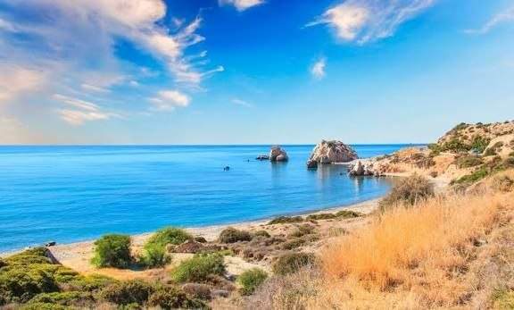
Beaches
Blue Flag beaches with crystal waters in Ayia Napa, Protaras, and beyond.
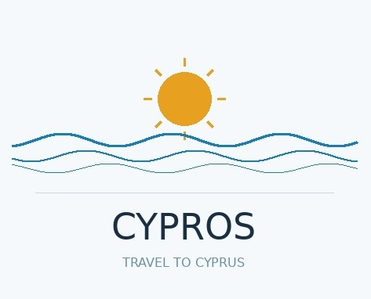
Cyprus Travel GuideSun-kissed beaches, mountain trails, ancient sites, and vibrant cuisine—year-round.
Explore Highlights
Blue Flag beaches with crystal waters in Ayia Napa, Protaras, and beyond.
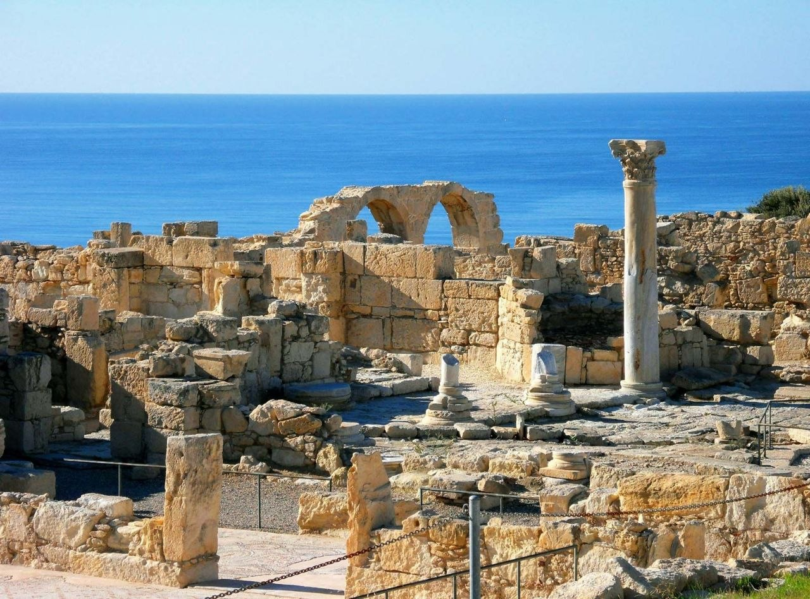
Walk among Greco‑Roman theaters, mosaics, and UNESCO sites in Paphos and Kourion.
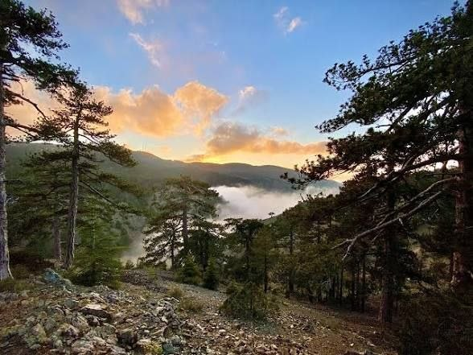
Hike coastal cliffs and Troodos pine forests; seasonal snow on Mount Olympus.
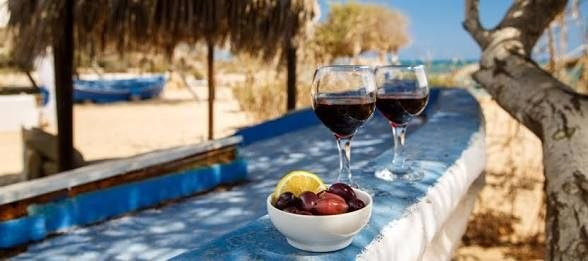
Taste Commandaria, village wines, halloumi, meze, and fresh seafood.
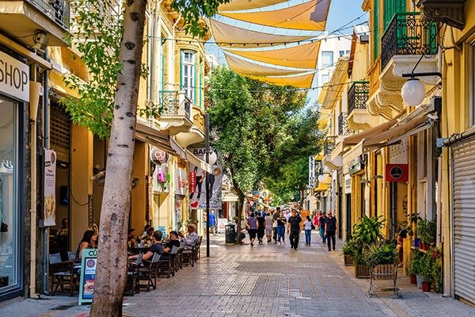
A living museum with Venetian walls, museums, and the Green Line crossing.
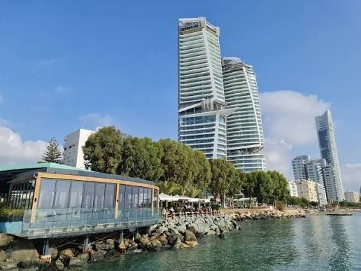
Seafront city with a lively marina, festivals, and access to wine villages.
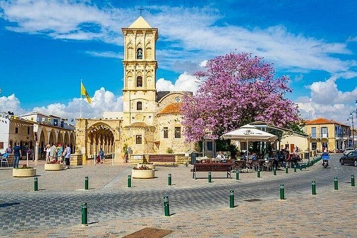
Palm-lined promenades, Agios Lazaros Church, and easy airport access.
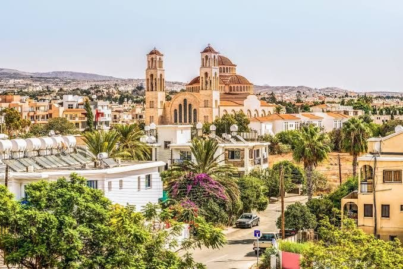
UNESCO‑listed mosaics, Tombs of the Kings, Akamas Peninsula nature.
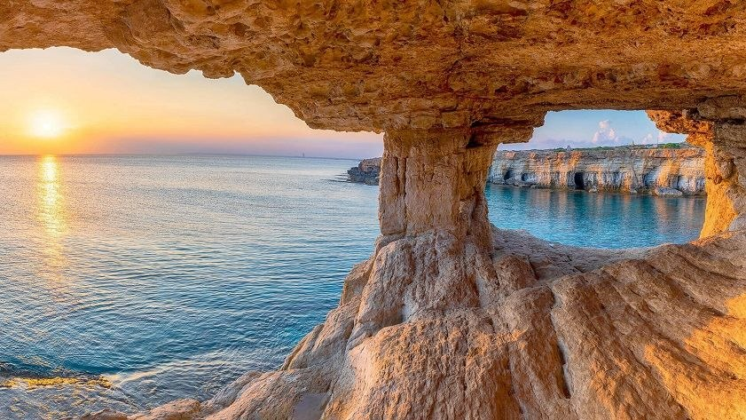
Famous beaches, sea caves, Cape Greco National Forest Park.
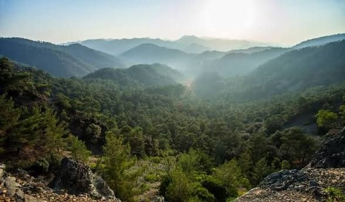
Byzantine painted churches, cool summers, and winter snow.
Mediterranean climate: long dry summers, mild winters. Spring and autumn balance warmth and crowds.
Airports in Larnaca and Paphos. Buses connect major towns; renting a car offers most flexibility (left‑side driving).
EU member; entry rules vary by nationality. Currency: Euro (€). Check official guidance before travel.
Generally safe; standard precautions apply. Tap water is treated in cities; bottled water widely available.
Tip: For latest arrivals data and events, see official statistics and the tourism portal.